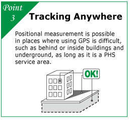

What's the anything-tracking system "Nantsui"?
Our new service, the anything-tracking system "Nantsui", uses positional information. The system provides an easy way to check the positions of pallets and other goods, such as trucks and valuables. Using the PHS network, the system can track underground and inside buildings as well, which are impossible to track by traditional GPS. It is effective in the investigation of missing pallets, management of truck arrival times, improvements in reliability, and reductions of wasted time. You can check the operation status via WEB on PCs or mobile phones.
Our features

Case studies
Nantsui device with temperature sensor
The position and temperature of goods are instantly available!
Information is transmitted once per minute. When there is a difference between the preset temperature and the actual conditions, the abnormality is displayed on a monitor. Therefore, the system is very useful in the distribution of goods that are sensitive to temperature, like foods and precision instruments. When an abnormality occurs, the time and place are also reported, so information is efficiently communicated to the delivery destination.